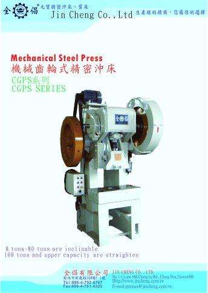
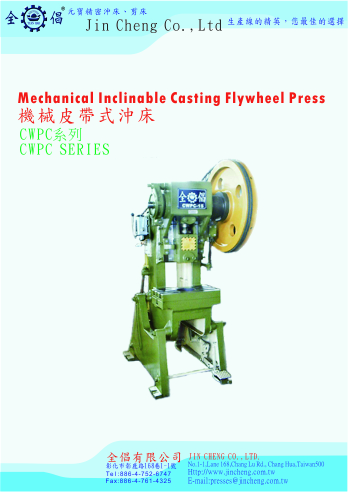
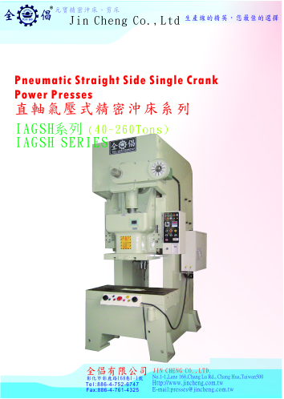
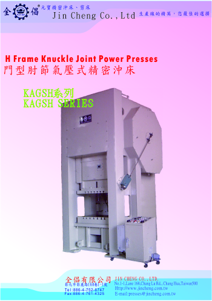
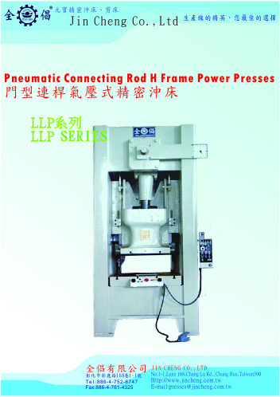

CAGSH 系列
本機特色：
1.適用於汽車零件，五金零件及各種連續沖壓零件生產；生產穩定，生產品質高。
2.主要飛輪襯墊鋼珠承軸。運轉平穩，可減少電力損失。
3.採複合氣壓摩擦式籬合器，可做吋動、一週轉或連續運轉，操作靈敏，安全可靠，本籬合器傳動大，剎車器能瞬間剎車停止。

CAWS 系列
本機特色：
1.適用於各式沖壓、伸抽、押花、折彎等作業；生產穩定、品質高。
2.零沖床附有卡模解脫裝置，保護沖床模具安全。
3.沖床機身採用鋼板焊接製造而成，鋼性良好，不易變形；並徑內應力消除處理，於操作運轉鍾振動及小。

CGPC 系列
本機特色：
1.適用於小型零件的生產組裝，可連續衝壓或以手工方式逐件生產；反應靈敏；速度快。
2.滑塊導板以80度組合而成，使沖床的精密性更高，可達一級或特級公差；CGPC-15區軸上加裝磷青銅，使耐磨性更高。
3.沖床機身採用高級鑄鐵製造而成，鋼性良好，不易變形。

CGPS 系列
本機特色：
1.適用於各式沖壓、伸抽、押花、折彎等作業；生產穩定、品質高。
2.滑塊以六面寬長型設計(60噸以上),導軌採合金銅為材質,耐磨性高,並可增加沖床的精密度。
3.沖床機身採用鋼板焊接製造而成，鋼性良好，不易變形；並徑內應力消除處理，於操作運轉中振動極小。

CWPC 系列
本機特色：
1.沖床機身採用高級鑄鐵製造而成,鋼性良好,不易變形。
2.適用於小型零件的生產組裝,可連續沖壓或以手工方式逐件生產;反應靈敏;速度快。
3.滑塊導板以80度組合而成,使沖床的精密度更高,可達一級或特級公差。

IAGSH 系列
本機特色：
1.沖床機身採用鋼板焊接製造而成,鋼性良好,不易變形;機身經內應力消除處裡,於操作運轉中震動極小。
2.附卡模油壓裝置,利於沖模超壓卡模時,可即時鬆壓解模,再補壓繼續工作,不影響生產線的進度。
3.沖頭特長導軌型,並附有平衡裝置,運轉精確平穩,增長沖頭使用壽命。

KAGSH 系列
本機特色：
1.適用於各式沖壓,深抽,無段面加工等高品質產品作業。
2.沖床機身採用鋼板焊接製造而成,鋼性良好,不易變形;機身經內應力消除處裡,於操作運轉中震動極小。
3.當滑塊下降至接近被加工物時,滑塊的速度會降低;使生產過程減少噪音與振動,提升產品的生產品質。

LLP 系列
本機特色：
1.適用於各式沖壓,深抽,無段面加工等高品質產品作業。
2.沖床機身採用鋼板焊接製造而成,鋼性良好,不易變形;機身經內應力消除處裡,於操作運轉中震動極小。
3.當滑塊下降至接近被加工物時,滑塊的速度會降低;使生產過程減少噪音與振動,提升產品的生產品質。

MAGSH 系列
本機特色：
1.附卡模油壓裝置,利於沖模超壓卡模時,可即時鬆壓解模,再補壓繼續工作,不影響生產線的進度。
2.沖床機身採用鋼板焊接製造而成,鋼性良好,不易變形;機身經內應力消除處裡,於操作運轉中震動極小。
3.主要飛輪襯墊鋼珠軸承,運轉平穩,可減少電力損失。

SHARING 系列
本機特色：
1.機體採用鋼板焊接而成;結構堅定穩固。
2.壓板裝置亦加裝橡皮墊,以減少對鐵板的擦傷,並減少不必要的損失。
3.後定規採用機械傳動,調整方便,尺寸精準,操作穩定。

QSH 系列

專用機器